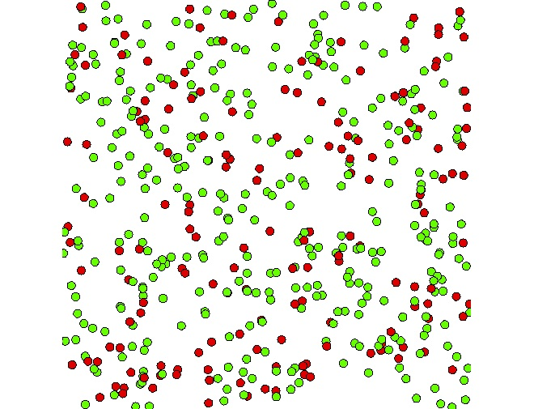

1. Simple SI Model
This first step Illustrates how to write a model in GAMA. In particular, it describes how to structure a model and how to define species - that are the key components of GAMA models.
Formulation
- Definition of the people species with a variable (is_infected) , an aspect (base) and two behaviors (move and infect)
- Definition of nb_infected_init, distance_infection and proba_infection parameters
- Creation of 500 people agents randomly located in the environment (size: 500x500)
- Definition a display to visualize the people agents.

Model Definition
model structure
A GAMA model is composed of three type of sections:
- global : this section, that is unique, defines the “world” agent, a special agent of a GAMA model. It represents all that is global to the model: dynamics, variables, actions. In addition, it allows to initialize the simulation (init block).
- species : these sections define the species of agents composing the model.
- experiment : these sections define a context of execution of the simulations. In particular, it defines the input (parameters) and output (displays, files…) of a model.
More details about the different sections of a GAMA model can be found here.
species
A species represents a «prototype» of agents: it defines their common properties.
A species includes several sub-definitions:
- the internal state of its agents (attributes)
- their behavior
- how they are displayed (aspects)
GAMA provides as well the possibility to give skills to species of agents. A skillI is a module integrating variables and actions coded in Java.
Concerning our model, we will give the moving skill to the people agents: it will give to the people agents supplementary variables (speed, heading, destination) and actions (follow, goto, move, wander).
species people skills:[moving]{
}
Concerning the internal state, a attribute is defined as follows: type of the attribute (int (integer), float (floating point number), string, bool (boolean, true or false), point (coordinates), list, pair, map, file, matrix, espèce d’agents, rgb (color), graph, path…) + name
- Optional facets: <- (initial value), update (value recomputed at each step of the simulation), function:{..} (value computed each time the variable is used), min, max
Note that all the species inherit from predefined built-in variables:
- A name (name)
- A shape (shape)
- A location (location) : the centroid of its shape.
We will give a variable to people agents: is_infected (bool):
species people skills:[moving]{
bool is_infected <- false;
}
Concerning the display of an agent, aspects have to be defined. An aspect represents a possible way to display the agents of a species : aspect aspect_name {…} In the block of an aspect, it is possible to draw :
- A geometry : for instance, the shape of the agent
- An image : to draw icons
- A text : to draw a text
We define an aspect for this species. In this model, we want to display for each people agent a circle of radius 5 and red or green according to the value of is_infected (if infected: red, green otherwise). We then use the keyword draw with a circle shape. To define the color that depends on is_infected, we use the tertiary operator condition ? val1 : val2. If the condition is true, this operator will return val1, otherwise val2. Note that it is possible to get a color value by using the symbol # + color name: e.g. #blue, #red, #white, #yellow, #magenta, #pink…
species people skills:[moving]{
...
aspect circle{
draw circle(5) color:is_infected ? #red : #green;
}
}
Concerning the behavior of agents, the simplest way to define it is through reflexes. A reflex is a block of statements (that can be defined in global or any species) that will be automatically executed at each simulation step if its condition is true. A reflex is defined as follows:
reflex reflex_name when: condition {...}
The when facet is optional: when it is omitted, the reflex is activated at each time step. Note that if several reflexes are defined for a species, the reflexes will be activated following their definition order.
We define a first reflex called move that allows the people agents to move using the wander action (provided by the moving skill) that allows to randomly move (with taking into account the agent speed)
species people {
...
reflex move{
do wander;
}
}
Note that an action is a capability available to the agents of a species (what they can do). It is a block of statements that can be used and reused whenever needed. Some actions, called primitives, are directly coded in Java: for instance, the wander action defined in the moving skill.
- An action can accept arguments. For instance, write takes an argument called message.
- An action can return a result.
There are two ways to call an action: using a statement or as part of an expression
- for actions that do not return a result:
do action_name arg1: v1 arg2: v2; - for actions that return a result:
my_var <- self action_name (arg1:v1, arg2:v2);
The second reflex we have to define is the infect one. This reflex will be activated only if is_infected is true. This reflex consists is asking all the people agents at a distance lower or equal to infection_distance to become infected with a probability proba_infection.
species people skills:[moving]{
...
reflex infect when: is_infected{
ask people at_distance infection_distance {
if flip(proba_infection) {
is_infected <- true;
}
}
}
...
}
Note that we used the ask statement. This statement allows to make a remote agent executes a list of statements. We used as well the flip operator that allows to test a probability.
global section
The global section represents the definition of the species of a specific agent (called world). The world agent represents everything that is global to the model: dynamics, variables… It allows to init simulations (init block): the world is always created and initialized first when a simulation is launched. The geometry (shape) of the world agent is by default a square with 100m for side size, but can be redefined if necessary. In the same way, the modeler can redefined the step variable that represent the duration of a simulation step and that is by default 1 second.
global variable
For our model, we define 4 global variables: nb_people (int, init value: 500), infection distance (float value, init value: 2 meters), proba_infection (float, init value: 0.05) and nb_infected_init (int, init value: 5). In addition, we redefine the geometry of the world by a square of 500 meters size and a simulation step of 1 minute.
global{
int nb_people <- 500;
float infection_distance <- 2.0 #m;
float proba_infection <- 0.05;
int nb_infected_init <- 5;
float step <- 1 #minutes;
geometry shape<-square(500 #m);
}
Model initialization
The init section of the global block allows to initialize the model. The statement create allows to create agents of a specific species: create species_name + :
- number : number of agents to create (int, 1 by default)
- from : GIS file to use to create the agents (string or file)
- returns: list of created agents (list)
For our model, definition of the init block in order to create nb_people people agents. We set the init value of the speed variable (given by the moving skill) to 5km/h.
In addition we ask nb_infected_init people to become infected (use of the nb among list to randomly draw nb elements of the list).
global{ ... init{ create people number:nb_people { speed <- 5.0 #km/#h; } ask nb_infected_init among people { is_infected <- true; } } }
experiment
An experiment block defines how a model can be simulated (executed). Several experiments can be defined for a model. They are defined using : experiment exp_name type: gui/batch {[input] [output]}
- gui : experiment with a graphical interface, which displays its input parameters and outputs.
- batch : Allows to setup a series of simulations (w/o graphical interface).
In our model, we define a gui experiment called main_experiment :
experiment main_experiment type: gui {
}
input
Experiments can define (input) parameters. A parameter definition allows to make the value of a global variable definable by the user through the graphic interface.
A parameter is defined as follows: parameter title var: global_var category: cat;
- title : string to display
- var : reference to a global variable (defined in the global section)
- category : string used to «store» the operators on the UI - optional
- <- : init value - optional
- min : min value - optional
- max : min value - optional
Note that the init, min and max values can be defined in the global variable definition.
In the experiment, definition of three parameters from the the global variable infection_distance, proba_infection and nb_infected_init :
experiment main_experiment type:gui{
parameter "Infection distance" var: infection_distance;
parameter "Proba infection" var: proba_infection min: 0.0 max: 1.0;
parameter "Nb people infected at init" var: nb_infected_init ;
...
}
output
Output blocks are defined in an experiment and define how to visualize a simulation (with one or more display blocks that define separate windows). Each display can be refreshed independently by defining the facet refresh_every: nb (int) (the display will be refreshed every nb steps of the simulation).
Each display can include different layers (like in a GIS) :
- Agents lists : agents layer_name value: agents_list aspect: my_aspect;
- Agents species : species my_species aspect: my_aspect
- Images: image layer_name file: image_file;
- Texts : texte layer_name value: my_text;
- Charts : see later.
Note that it is possible to define a opengl display (for 3D display) by using the facet type: opengl.
In our model, we define a display to draw the people agents with their circle aspect.
experiment main_experiment type:gui{
...
output {
display map {
species people aspect:circle;
}
}
}
Complete Model
model SI_city
global{
int nb_people <- 500;
float agent_speed <- 5.0 #km/#h;
float infection_distance <- 2.0 #m;
float proba_infection <- 0.05;
int nb_infected_init <- 5;
float step <- 1 #minutes;
geometry shape<-square(500 #m);
init{
create people number:nb_people;
ask nb_infected_init among people {
is_infected <- true;
}
}
}
species people skills:[moving]{
float speed <- agent_speed;
bool is_infected <- false;
reflex move{
do wander;
}
reflex infect when: is_infected{
ask people at_distance infection_distance {
if flip(proba_infection) {
is_infected <- true;
}
}
}
aspect circle{
draw circle(5) color:is_infected ? #red : #green;
}
}
experiment main_experiment type:gui{
parameter "Infection distance" var: infection_distance;
parameter "Proba infection" var: proba_infection min: 0.0 max: 1.0;
parameter "Nb people infected at init" var: nb_infected_init ;
output {
display map {
species people aspect:circle;
}
}
}